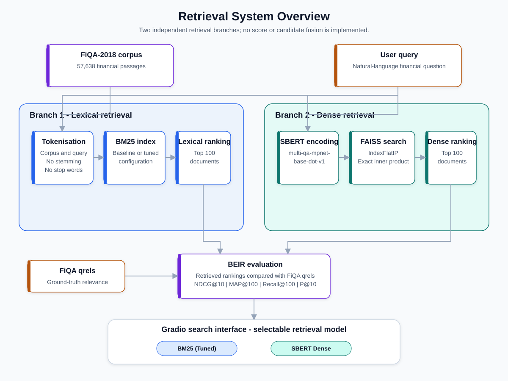
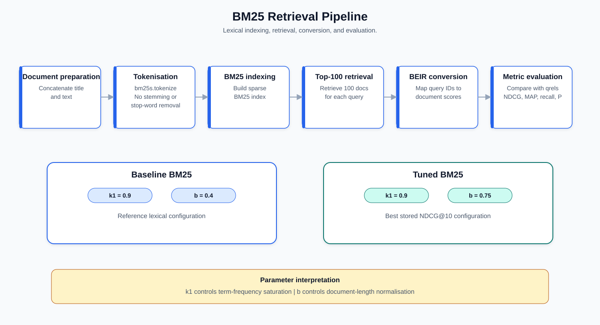
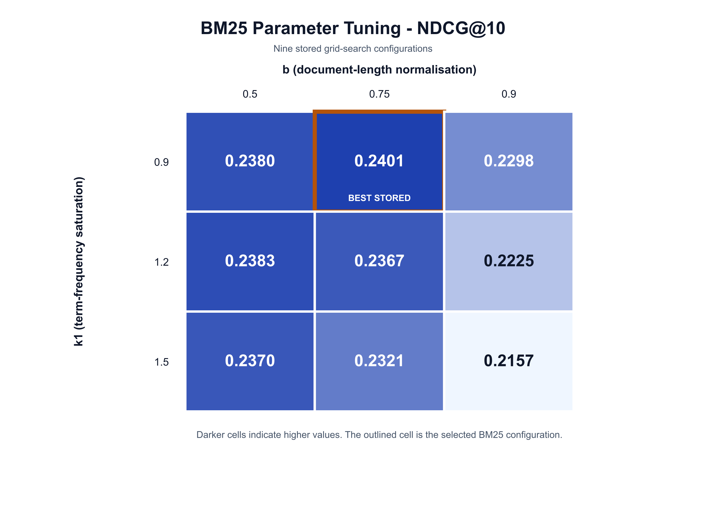
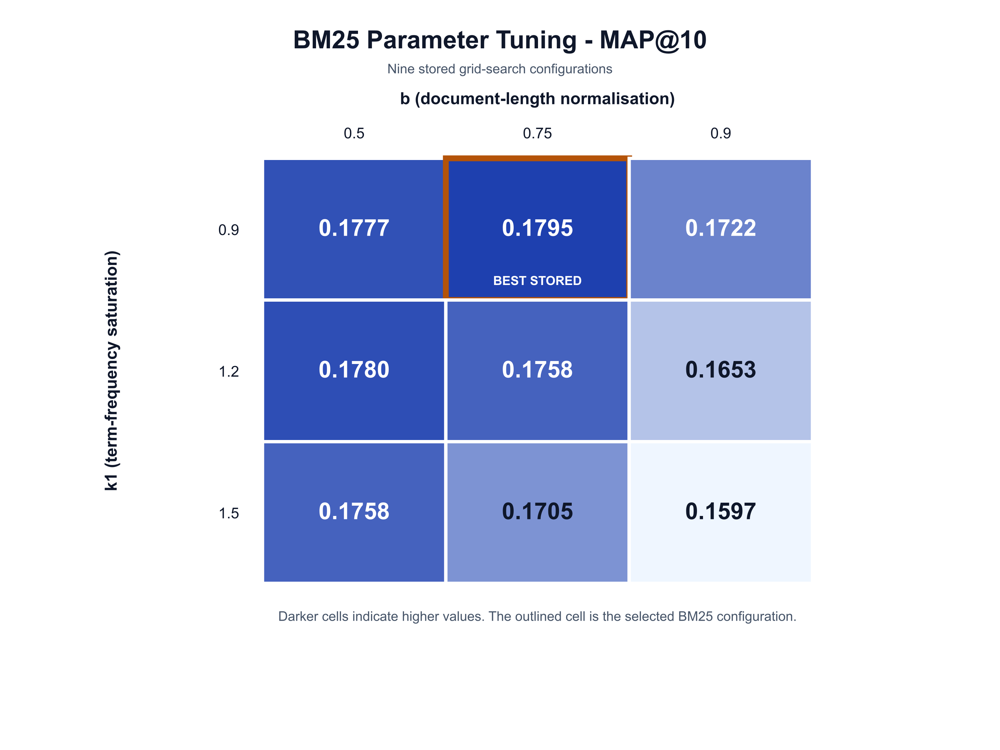
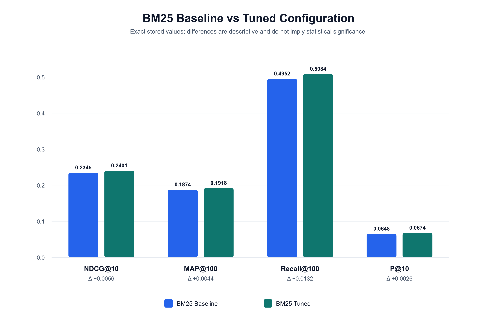
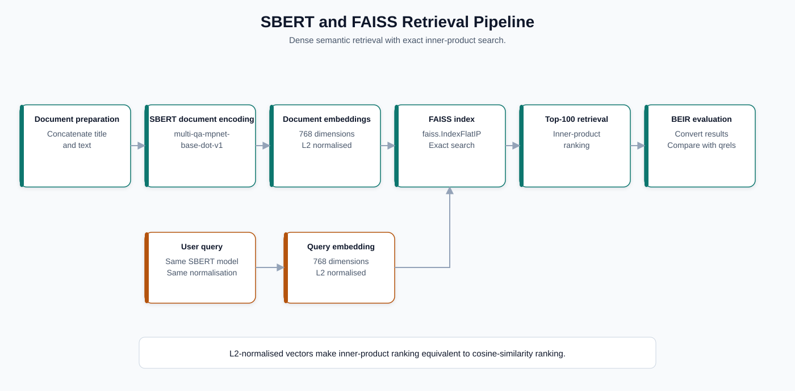
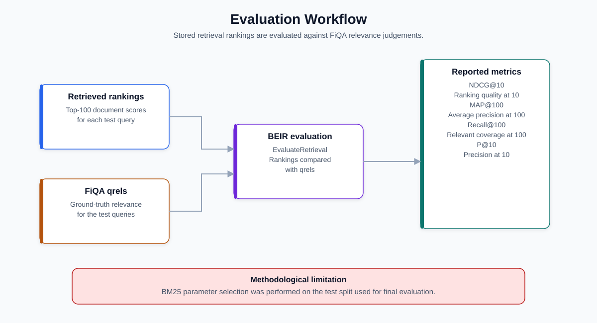
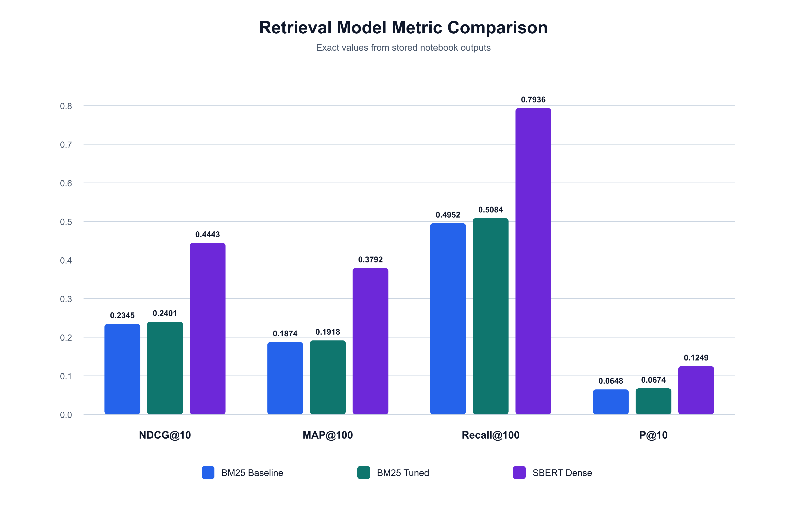

SBERT NDCG@10
The strongest ranking-quality result across all evaluated models.
Information Retrieval · Financial Search
A retrieval system for financial question answering that compares lexical BM25, tuned BM25 and dense semantic search with Sentence-BERT and exact FAISS indexing.
01
The project tests whether dense semantic retrieval can improve financial question answering when queries and relevant passages use different vocabulary.
Three systems are evaluated on the same FiQA-2018 test queries and relevance judgements: a BM25 baseline, an optimised BM25 configuration and an SBERT dense retriever backed by exact FAISS search. Both retrieval branches return the top 100 documents per query and are evaluated independently rather than fused.
The notebook preserves the complete implementation, tuning outputs, model comparisons and an interactive search interface.
02
03
The strongest ranking-quality result across all evaluated models.
Nearly four-fifths of relevant passages recovered within the top 100.
Absolute NDCG@10 improvement from the baseline to the tuned model.
04
BEIR FiQA-2018 provides conversational financial questions, answer passages and test relevance judgements.
The notebook downloads the public BEIR archive at runtime and loads its test split through GenericDataLoader. Titles and passage text are concatenated before indexing. The dataset is not duplicated in either repository.
Financial passages available to both retrieval branches.
Natural-language questions used for final evaluation.
Query-level relevance mappings used by BEIR metrics.
05
A shared corpus feeds two independent retrieval paths: lexical matching with BM25 and semantic matching with SBERT.
Each branch produces query-to-document scores in BEIR format, retrieves its top 100 candidates and passes them into the same evaluation workflow. Keeping the branches independent makes their differences easier to interpret.

06
A nine-configuration grid search examined term-frequency saturation and document-length normalisation.
The baseline uses k1=0.9 and b=0.4. Tuning evaluates k1 ∈ {0.9, 1.2, 1.5} and b ∈ {0.5, 0.75, 0.9}. The best stored setting is k1=0.9, b=0.75, selected by NDCG@10. It retains the baseline term-frequency setting while applying stronger document-length normalisation.




07
Sentence embeddings allow the retriever to match semantic meaning even when queries and passages do not share exact terms.
The pretrained multi-qa-mpnet-base-dot-v1 model encodes documents and queries into 768-dimensional, L2-normalised vectors. Document vectors are stored in faiss.IndexFlatIP; with normalised embeddings, inner-product ranking is equivalent to cosine similarity. The index performs exact rather than approximate search.

08
Every run is converted to BEIR's query-to-document score format and evaluated against the FiQA test qrels with four complementary metrics.
Measures ranking quality in the first ten results and rewards relevant documents placed higher.
Summarises precision at relevant ranks through the first 100 results.
Measures the share of known relevant documents recovered in the top 100.
Measures the proportion of relevant documents within the first ten results.

09
SBERT Dense achieved the strongest stored result on every reported metric.
| Model | NDCG@10 | MAP@100 | Recall@100 | P@10 |
|---|---|---|---|---|
| BM25 Baseline | 0.2345 | 0.1874 | 0.4952 | 0.0648 |
| BM25 Tuned | 0.2401 | 0.1918 | 0.5084 | 0.0674 |
| SBERT Dense | 0.4443 | 0.3792 | 0.7936 | 0.1249 |
Final stored comparison on the BEIR FiQA-2018 test split. Higher is better for every metric.
BM25 tuning improves all four metrics, though the gains are modest. Dense retrieval substantially outperforms both lexical variants, consistent with its ability to bridge vocabulary differences between conversational questions and more specialised financial passages.

10
A Gradio interface turns the evaluated retrievers into an explorable financial search tool.
Users can enter a free-text query, choose between tuned BM25 and SBERT Dense, select a Top-K value from 1 to 20 and inspect ranked document IDs, scores, titles and text snippets. Example financial questions support both retrieval modes.
The temporary gradio.live URL preserved in the notebook is not presented as a permanent deployment; running the interface cell creates a new session.
11
Financial questions and relevant passages can express the same concept using very different terminology.
Both branches needed identical test queries, cut-offs, qrels and metric definitions.
BM25 tuning and final evaluation use the same split, which may overestimate generalisation.
Dense document encoding is more resource-intensive, and latency was not systematically benchmarked.
12
13
The repository contains the complete notebook, stored tuning grid, model comparison, diagrams, figures, requirements and presentation.